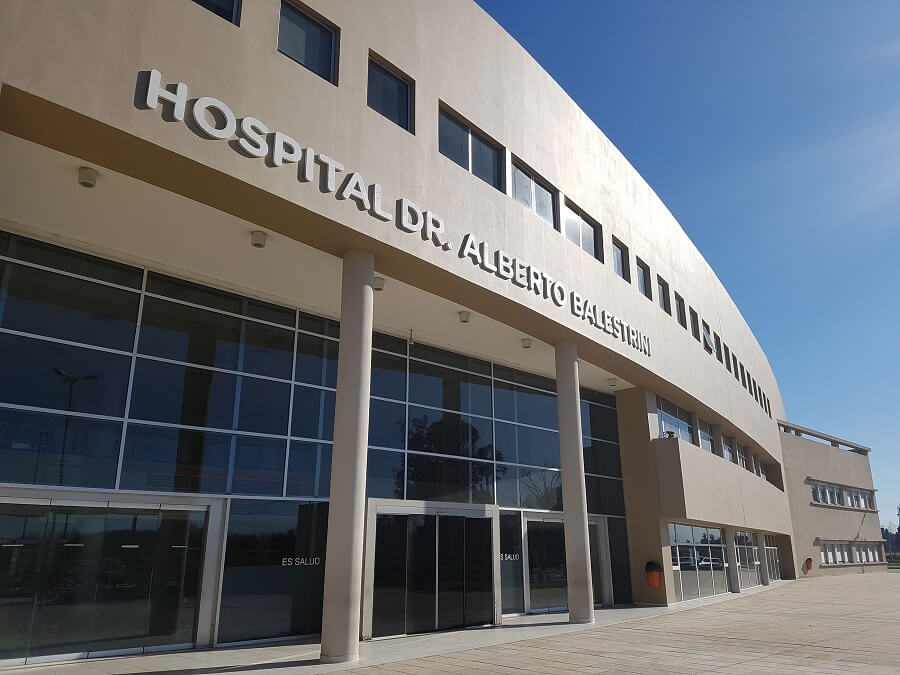

Hospital Alberto Balestrini
sector de salud publica - Provincia de Buenos Aires
Me desempeño actualemnte bajo el sistema de becas contingecia, desempeñando labores en el sector de lavanderia, contribuyendo con los distintos sectores del mismo.
trabajo actualaunque ese es mi trabajo actual, tengo mucha experiencia en puestos de atencion al cliente, desempeñandome en labores como venta y resolucion de conflictos, tambien asi en manejo de cajas por lo que desembolverme bajo presion es algo a lo que estoy acostumbrado